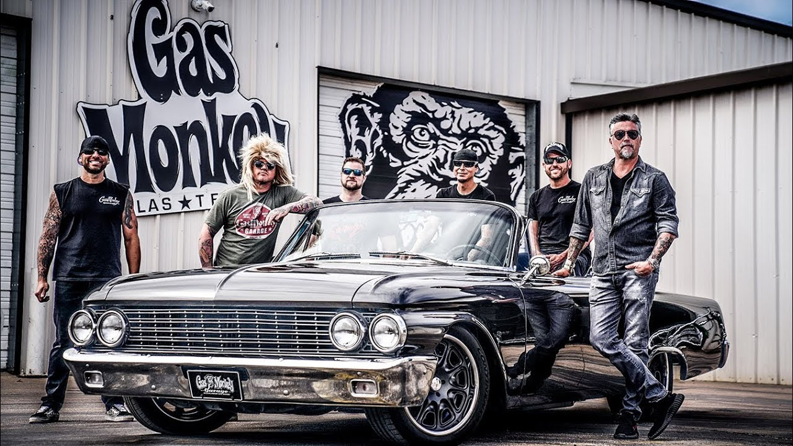

Garage
We're always up to some wild and exciting custom builds! Sit back, crack open
a cold one, and dive into our latest episodes. Whether it's jaw-dropping transformations, behind-the-scenes
insights, or showcasing our craftsmanship, you won't want to miss
what we've been up to. Enjoy the ride and stay tuned for more
amazing builds!
In 2002, Rawlings launched Gas Monkey Garage in Dallas, selling Lincoln Press in 2004.
The shop customizes classic and hot-rod automobiles for customers worldwide. From 2012 to 2020,
the business was the focus of the Discovery Channel series Fast N' Loud.
Rawlings also co-hosts the show Garage Rehab on the Discovery Channel since 2017,
which is about overhauling struggling automotive shops, along with co-hosts Russell Holmes and
Chris Stephens. He pitched the concept to the network circa 2015. In 2022, Gas Monkey
Garage became title sponsor for Peter Hickman and FHO Racing at the Isle of Man TT Races.
____________________
//| | \
// | | \
___________//____|___________|__________()\__________________
/__________________|_=_________|_=___________|_________________{}
[ ______ | | . | == ______ { }
__[__ /## ##\| | | /## ##\ _{# }_
{_____)______|## ##|___________|_____________|___|## ##|__(______}
/ ##__## / ##__## \
If you don't find a way to make money
while you sleep, you will work until you die.